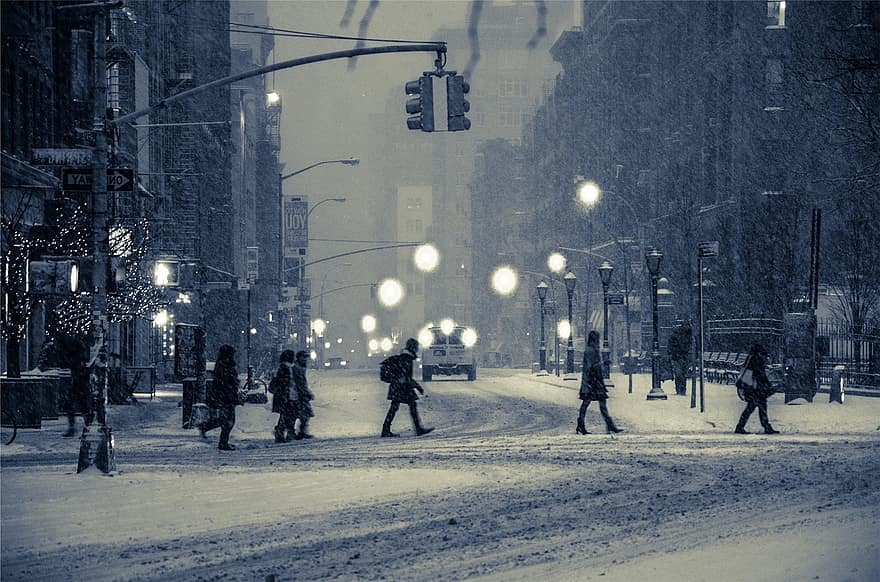
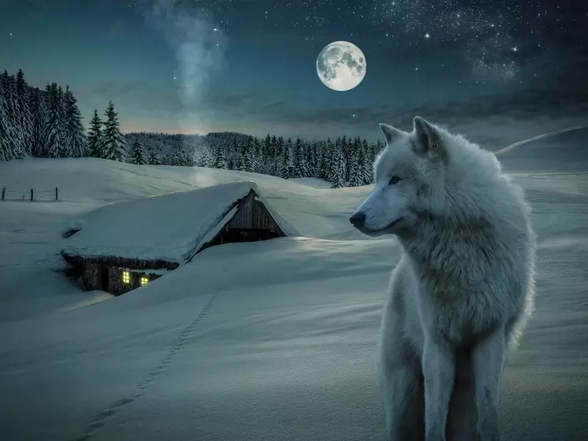

Inverno:
Essa estação acontece logo após o outono e é a estação anterior à primavera.
A sua ocorrência, assim como das demais estações do ano, está atrelada ao movimento de translação da Terra.
A principal característica do inverno é a queda das temperaturas.
A diminuição das médias mensais de temperatura nessa estação é perceptível em todos os tipos climáticos, mais forte nas zonas temperadas e polares do globo.
Essa característica é dada em razão da diminuição da insolação, ou seja, da chegada dos raios solares à superfície terrestre durante o inverno.
Ademais, pelo mesmo motivo, o inverno apresenta noites mais longas e dias mais curtos.
O inverno não ocorre de maneira simultânea nos dois hemisférios do globo.
Sendo assim, apesar das características gerais do inverno, cada hemisfério apresenta elementos próprio dessa estação.
Devido a sua localização geográfica e à influência de elementos como a latitude.
Devido a essa diferenciação quanto à localização geográfica, algumas regiões apresentam maiores índices pluviométricos, bem como maior umidade.
Já em outras regiões, essa estação é caracterizada pela baixa umidade e por baixos índices pluviométricos.
Algumas espécies apresentam comportamentos específicos de adaptação, como o aumento da gordura corporal na medida em que a estação aproxima-se.
Outra técnica bastante utilizada é a hibernação, que consiste em entrar em período letárgico, ou seja, os animais entram em fase de dormência.
A fim de reduzir sua atividade metabólica, tornando-a mais lenta, bem como há também diminuição dos batimentos cardíacos.
A migração também consiste em uma técnica para fugir das baixas temperaturas.
Muitas espécies deslocam-se das regiões frias para as regiões de temperaturas mais elevadas, retornando ao seu habitat assim que o inverno acaba.
Ambiente Urbano no Inverno
Ambiente Rural no Inverno
